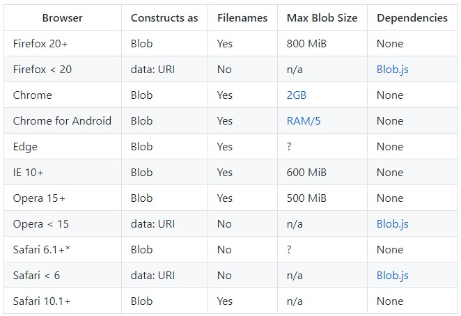
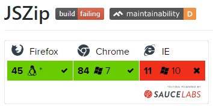
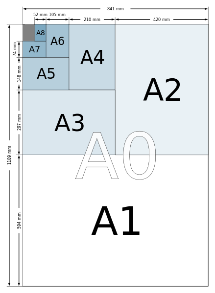

本文最后更新于：21 分钟前
接到新需求，产品希望实现下载动态网页内容的功能，用于打印或印刷。
生成PDF最佳，生成一组高清图片也行。本文详细记录了实现方案。
html2canvas
浏览器兼容性
The library should work fine on the following browsers (with Promise polyfill):Firefox 3.5+ Google Chrome Opera 12+ IE9+ Safari 6+需特别注意的是，html中图片切勿跨域，最好代理到同域下，否则图片会丢失。
代码示例
const canvasList = [] const demo1 = document.queryselect('#demo1') const demo2 = document.queryselect('#demo2') html2canvas(demo1).then((canvas) => { canvasList.push(canvas); }); html2canvas(demo2).then((canvas) => { canvasList.push(canvas); });
canvas2pdf
浏览器兼容性
jsPDF requires modern browser APIs in order to function. To use jsPDF in older browsers like Internet Explorer, polyfills are required. You can load all required polyfills as follows:import "jspdf/dist/polyfills.es.js";与html2canvas等搭配使用
–>>详见<<–
–>>调试<<–// webpack.config.js module.exports = { // ... externals: { // only define the dependencies you are NOT using as externals! canvg: "canvg", html2canvas: "html2canvas", dompurify: "dompurify" } };In Vue CLI projects, externals can be defined via the configureWebpack or chainWebpack properties of the vue.config.js file (needs to be created, first, in fresh projects).
常规代码演示
let doc = new jsPDF() // new jsPDF('landscape') 横向 canvasList.forEach((canvas, index) => { const imgData = canvas.toDataURL('image/jpeg'); index > 0 && doc.addPage("a4", "l"); doc.addImage(imgData, 'JPEG', 0, 0, 1920, 1080) }) doc.save("demo.pdf");
FileSaver保存为图片并下载
- 兼容性

IE < 10
It is possible to save text files in IE < 10 without Flash-based polyfills. See ChenWenBrian and koffsyrup’s saveTextAs() for more details.
- 示例
import { saveAs } from 'file-saver'; try { var isFileSaverSupported = !!new Blob; } catch (e) {} canvasList.forEach((canvas, index) => { canvas.toBlob((blob) => { fileSaver.saveAs(blob, `${index}.jpg`); }); })
JSZIP+FileSaver打包下载多张图片
- 兼容性

- 示例
import JSZip from 'jszip' import { saveAs } from 'file-saver'; let zip = new JSZip(); // 不支持win10 ie11 ，详见github zip.file("Hello.txt", "Hello World\n"); let img = zip.folder("images"); canvasList.forEach((canvas, index) => { img.file(`${index}.jpg`, canvas.toDataURL().split(',')[1], {base64: true}); }) zip.generateAsync({type:"blob"}) .then(function(content) { // see FileSaver.js saveAs(content, "学生二维码.zip"); });
拓展知识
A4纸是ISO 216（纸张国际化标准尺寸），是世别界上大多数国家所使用的A4纸尺寸。目前中国采用的是ISO 216标准，以规范纸大小，与国际通用。
A4纸尺寸
A4纸尺寸：210×297；
A3纸尺寸：297×420；
A2纸尺寸：420×594；
A1纸尺寸：594×841；
A0纸尺寸：841×1189；
# 备注：长(mm)×宽(mm) 单位：毫米（mm）
A4纸大小记忆方法
通过上图各大小型号的纸张长宽度数据对比，我们可以看出纸张大小变化的规律，如此我们得出记忆方法如下。
方法：A0纸长度方向对折一半后变为A1纸；A1纸长度方向对折一半后变为A2纸；A2纸长度方向对折一半后变为A3纸，A3纸长度方向对折一半后变为A4纸。
A4规格的纸是我们日常生活中最常用到的，一般只要记住A4是210毫米×297毫米，我们就很快推理出其它规格纸的大小尺寸。
A4纸的像素和分辨率
根据A4纸尺寸是210毫米×297毫米，而1英寸=2.54厘米，我们可以得出当分辨率是多少像素时，得出A4纸大小尺寸为多少毫米。如下是我们较长用到的规格尺寸：
当分辨率是72像素/英寸时，A4纸像素长宽分别是842×595；
当分辨率是120像素/英寸时，A4纸像素长宽分别是2105×1487；
当分辨率是150像素/英寸时，A4纸像素长宽分别是1754×1240；
当分辨率是300像素/英寸时，A4纸像素长宽分别是3508×2479；展板及印刷
展板 100~120dpi
印刷 300dpi
工具及参考资料
本博客所有文章除特别声明外，均采用 CC BY-SA 4.0 协议 ，转载请注明出处！